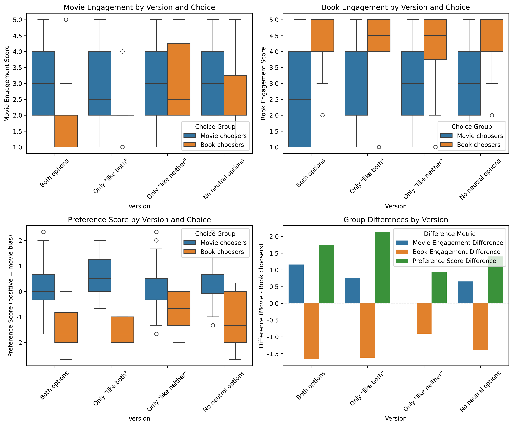
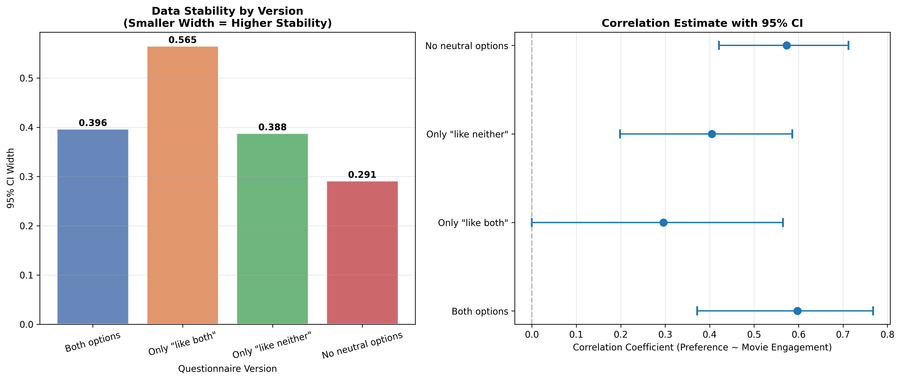
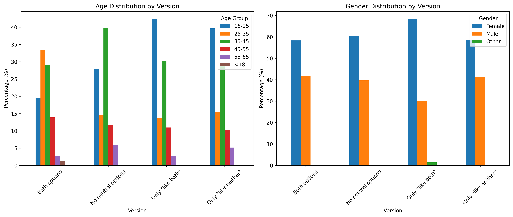
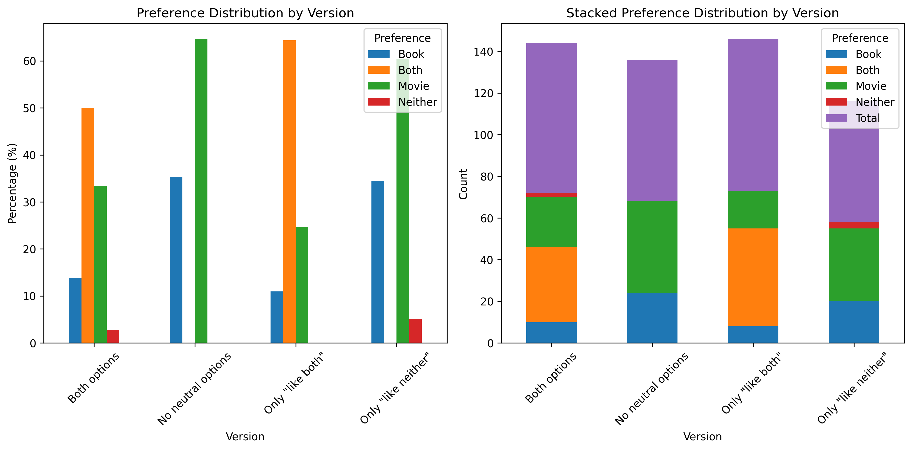
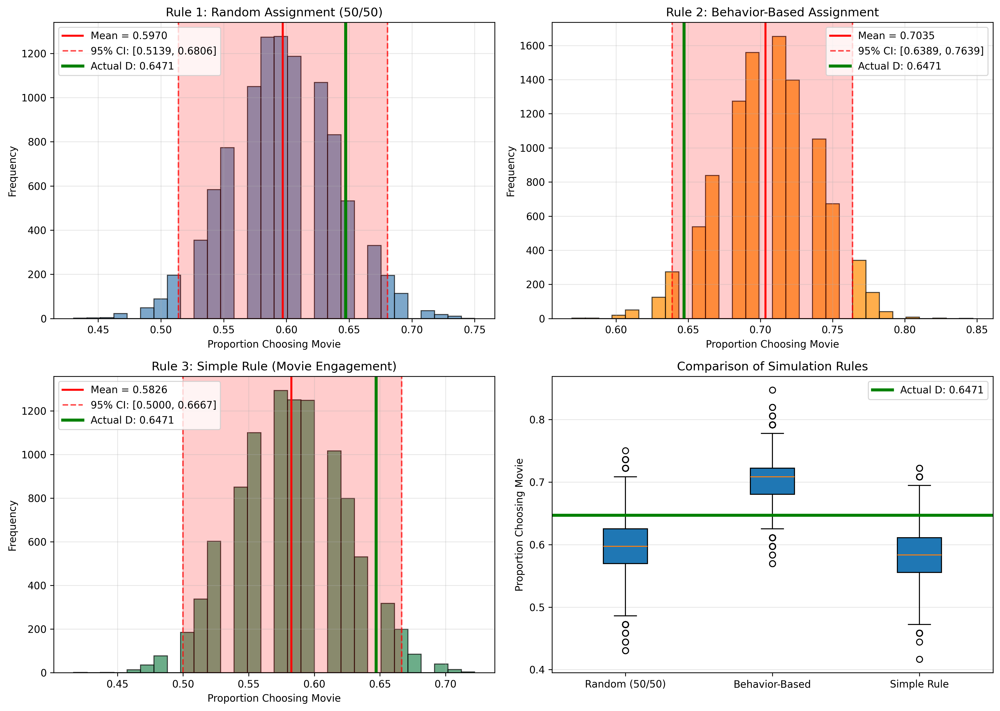
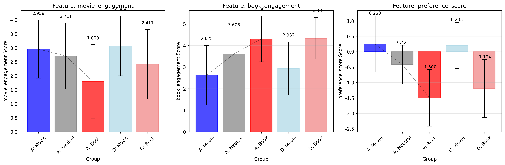
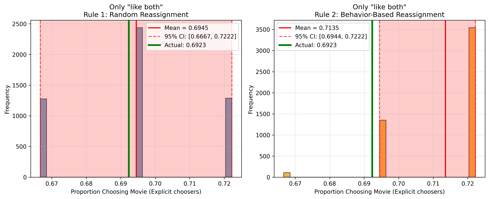
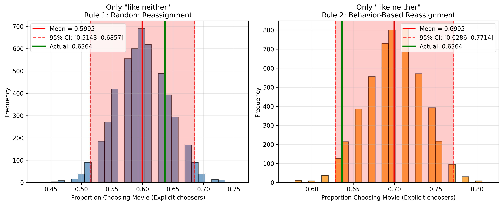
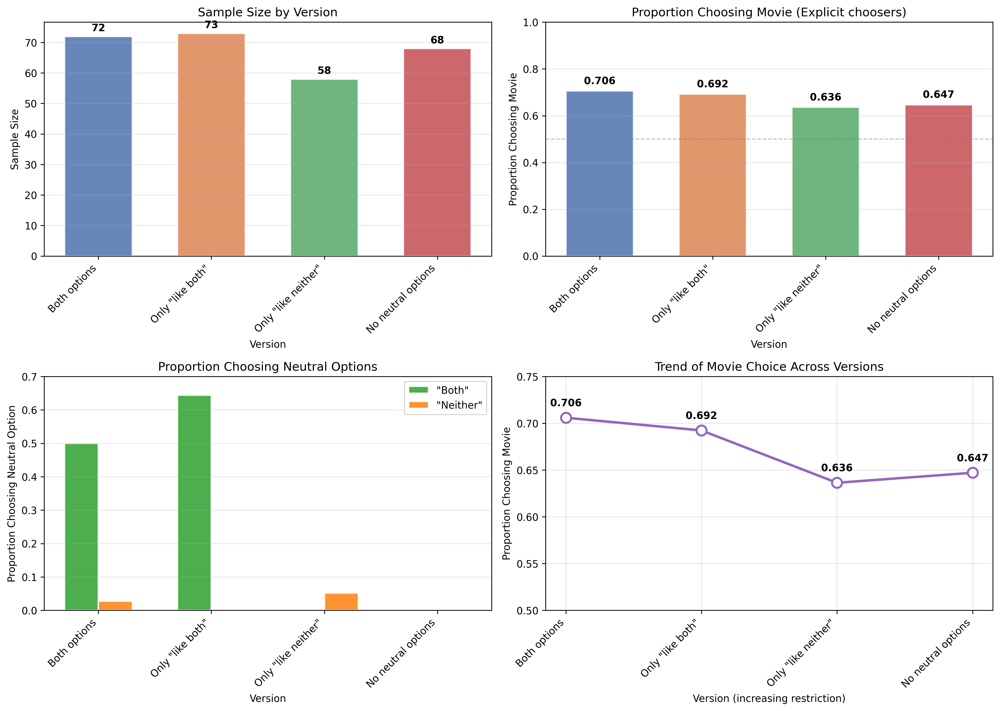

问卷调查中的中立选项是否可能影响数据分布？


今天在朋友圈看到同学小组作业的调查问卷，内容是研究 MBTI 和喜欢猫/狗之间的联系。点进去发现居然没有“两者都喜欢”的选项，这让我这种既爱猫又爱狗的人士怎么办🤣。不过这引出了一个问题：问卷调查中的中立选项是否可能影响数据分布？
询问作者“既喜欢猫又喜欢狗的人应该选什么选项”之后，作者说：
为了避免大家都选都喜欢，我特地删了这个选项，所以只能选出更喜欢的
但是直觉告诉我，这样的话，都喜欢的人会以噪声的形式落入统计数据，进而造成数据污染。关键在于，一个人两者都喜欢的的人不一定能保证今天和明天“硬选”出来的选项是相同的，这在研究关联性的统计中不一定站得住脚。
但是转念又想，万一这种“更”的趋势真的能反映在数据中呢？毕竟没有确凿的证据证明我的直觉是对的。于是我设计了以下实验（当然，由于资源和时间限制，我没有设置完整的对照试验，不然我需要用完 8 个问卷星账号的问卷互填的点数，我才不干🤣）
声明：纯做着玩，没有对照组，资源有限，结论不严谨，已经有相关研究，浪费时间
01 实验设计
理想的实验需要同一批人在不同条件下重复作答，但我摆了对照组😋。我的替代方案是设计四个平行版本的问卷，每个版本在中立选项的设置上有所不同，构成一个类实验设计：
- 版本 A（对照组蓝图）：同时提供“都喜欢”和“都不喜欢”选项。这是我探究真实分布的理想参照。
- 版本 B（只有“都喜欢”）：仅提供“都喜欢”选项，不提供“都不喜欢”。
- 版本 C（只有“都不喜欢”）：仅提供“都不喜欢”选项，不提供“都喜欢”。
- 版本 D（强制选择）：两个中立选项都不提供，参与者必须在电影和书籍中强制二选一。这模拟了我同学问卷的设计。
所有版本都包含相同的背景问题，用于测量参与者在电影和书籍上的真实参与度、身份认同和行为倾向，例如“过去一个月您看电影的频率”、“您认为自己是影迷吗？”等。
这样，版本 A 揭示了人群的真实构成（有多少明确偏好者，有多少中立者），而其他版本则像施加了不同的“滤镜”，让我观察强制选择或部分选择如何改变数据的模样。关键在于，如果中立选项无关紧要，那么四个版本中，那些“明确选择了电影或书籍”的群体，他们的行为特征应该是相似的。
02 数据预处理
通过互填问卷渠道收集数据，不可避免地会混入一些无效作答。为了确保分析质量，我首先剔除了所有作答时间短于 15 秒的记录，这类记录极可能是随意点击的结果。
经过努力，我拿到了 417 份样本。清理后（也就是剔除作答时间 < 15s 的样本后），我得到了 271 份有效样本，在各版本间分布相对均衡。
在分析之前，我面临一个根本的翻译问题：如何将“几乎每天”、“是”、“立即观看”这些分类选项，转化为可以进行数学比较和关联分析的行为强度分数？
这不是一个中立的转换。每一个数字的赋予，都隐含了我对于“什么是更强的参与”的价值判断。整个过程，更像是在数据的语法规则下，进行一次谨慎的编码。
首先，是统一方向。频率题中，1 代表“几乎每天”，5 代表“几乎没有”。我希望一个表示“高参与度”的变量，其数值也应该更高。所以，第一项操作是线性反转：
其次，是整合维度。仅有频率不够。一个人自称“影迷”（身份认同），或者有新片必看（行为积极性），都是更强烈的信号。因此，我将身份题（是/否）转换为 1 和 0，将行为题（立即观看、稍后看、不关注）也反转编码为 3、2、1 分。
但是，一个自称影迷（身份 = 1）但看得不多（参与度 = 2）的人，整体上到底有多“电影偏好”？我需要一个单一的综合指标。
于是，我构建了“偏好分数”，其核心思想是计算电影侧与书籍侧在所有维度上的加权差值：
这个公式是理解后续所有分析的关键：
- 结果为正：综合行为偏向电影。
- 结果为负：综合行为偏向书籍。
- 结果接近零：行为上是个“中立派”，两种活动参与度相当。
- 为何身份权重是2？ 这是一个基于行为科学直觉的假设：宣称自己是“影迷”或“书迷”，是一种更强的认知承诺和社会标签，它可能比一时的行为频率更能稳定地反映核心偏好。这个“2”是一个经过推敲的假设值，它强调了身份认同的突出性，但又未过分到完全主宰整个分数。
至此，我完成了从离散选项到连续谱系的映射。这个分数，便是后续所有关联分析的基石。当我比较不同问卷版本中“电影组”和“书籍组”的差异时，我比较的正是他们在这个综合行为谱系上的平均位置之差。
03 关联信号减弱
实验的核心假设是：强制选择会引入噪声，从而稀释或扭曲“偏好”与“其他行为特征”之间本应存在的关联。简单说，就是模糊了电影爱好者和书籍爱好者之间的真实差异。
为了检验这一点，我分别计算了每个版本中，“电影组”和“书籍组”在多项行为指标上的平均得分。如果我的假设成立，我会看到一个清晰的模式：
- 在允许表达中立的版本（A、B）中，“硬选”出来的电影组和书籍组，其行为差异应该更鲜明。因为大量中立者已被分流，剩下的多是“纯度”较高的偏好者。
- 在强制选择的版本（D）中，两组的行为差异应该被冲淡、更模糊。因为每组都混入了被迫站队的“中立者”，他们拉平了组间的特征差异。
数据完美地印证了这个模式。让我以“电影参与度”这个核心指标为例：
| 问卷版本 | 电影组的平均参与度 | 书籍组的平均参与度 | 组间差异 |
|---|---|---|---|
| A（全选项） | 2.96 | 1.80 | +1.16 |
| B（仅“都喜欢”） | 2.89 | 2.12 | +0.76 |
| C（仅“都不喜欢”） | 3.06 | 3.05 | +0.01 |
| D（强制选择） | 3.07 | 2.42 | +0.65 |

这张表格揭示了一个有趣的故事。在提供“都喜欢”选项的 A 组中，电影爱好者与书籍爱好者在电影参与度上差异最大（1.16 分）。而在强迫所有人站队的 D 版本中，这个差异缩小了近一半（0.65 分）。这直观地说明，强制选择就像在清晰的信号里加入了噪声，让原本 distinct 的群体特征变得模糊。
最极端的是 C 版本（仅有“都不喜欢”选项），组间差异几乎为零（0.01 分）。这可能是因为“都不喜欢”是一个强烈且少见的表态，选择它的人和明确选择电影/书籍的人，在某些行为上可能本身就比较接近，或者样本量问题导致了不稳定结果。
统计检验进一步支持了这一发现。我建立了一个回归模型，检验“问卷版本”是否会调节“偏好”对“电影参与度”的影响。模型中的交互项显著（p < 0.05），这从统计上证实了：“偏好”与“行为”之间的关系强度，确实因问卷格式的不同而发生了改变。
04 稳定性分析
为评估不同问卷设计下数据结论的可靠性，我对全部四个版本的数据进行了 Bootstrap 自助法再抽样分析（n = 1000）。该方法通过模拟重复抽样，计算“偏好分数”与“电影参与度”相关系数的分布，其 95% 置信区间的宽度直接衡量了估计结果的稳定性：区间越宽，说明基于单次调查得出的结论越可能因抽样波动而发生改变。
分析结果揭示了一个反直觉的模式：
| 问卷版本 | 明确选择者样本量 | 平均相关系数 | 95% 置信区间宽度 |
|---|---|---|---|
| No neutral options (D) | 68 | 0.573 | 0.291 |
| Only “like neither” (C) | 55 | 0.405 | 0.388 |
| Both options (A) | 34 | 0.598 | 0.396 |
| Only “like both” (B) | 26 | 0.296 | 0.565 |

与最初“强制选择会引入噪声导致不稳定”的假设相反，强制选择版本（D 组）的估计结果最为稳定（区间宽度最窄）。而提供了“都喜欢”选项的B版本，其置信区间宽达 0.565，意味着相关系数可能在 [-0.000, 0.565] 之间波动，显示出极高的不稳定性。
这一发现促使我们对“稳定性”进行更细致的解读：强制选择设计通过消除中立选项，迫使所有受访者使用统一的二元尺度作答，这可能在一致性上带来优势，减少了因态度模糊而产生的回答变异。然而，这种“一致性”是以牺牲准确性为代价的——它系统性地模糊了真实存在的群体差异（如第三章所示）。因此，问卷设计面临一个根本的权衡：是追求更“纯净”、更稳定的测量信号（强制选择），还是追求更丰富、更真实但可能更“嘈杂”的行为刻画（提供中立选项）。本实验表明，简单提供“都喜欢”选项（B 组）可能在两端皆失，既未能有效揭示潜在偏好，又引入了最大的结论不确定性。
05 协变量

可能影响核心关系（如偏好选择）的其他测量变量称为协变量，主要指收集到的人口学背景信息：年龄和性别。为了剥离这些因素可能造成的混淆，我在统计分析中对其进行了控制。
协变量的通常处理方法是将其纳入多元统计模型。在分析“问卷版本是否影响电影偏好比例”时，我采用了逻辑回归模型。在这个模型中，自变量是问卷版本，因变量是是否选择电影，而年龄和性别则作为控制变量（协变量）一并放入模型。这样，模型所估计出的“版本效应”，便可以理解为在排除了年龄、性别差异的影响后，问卷设计本身的净影响。
结论是：即使在控制了年龄和性别后，不同问卷版本之间的电影选择比例仍然没有出现统计学上的显著差异。具体而言，以“Both options”版本为参照，其他版本的效应系数均不显著（p 值均大于 0.05）。这意味着，最初观察到的版本间无差异的结果是稳健的，并非由年龄或性别分布的不均衡所导致。
06 中立选项的吸积效应
中立选项真是重力啊（大雾）。除了稀释关联，中立选项更直接的作用是改变了人群的分布。数据显示，“都喜欢”选项就像一个强大的吸引力中心：
- 在A 组（提供该选项）中，50% 的参与者选择了“都喜欢”。
- 在B 版本（仅提供该选项）中，这一比例更是高达 64.4%。

这意味着，在一个旨在研究“电影 vs 书籍”偏好与其他特质关联的调查中，如果提供“都喜欢”选项，超过一半的受访者会从你的核心分析中“消失”或需要被特殊处理。简单地强制他们二选一，就等于将这部分复杂且可能内部不一致的群体，随机地、带有噪声地分配到了两个阵营中，污染了后续的所有分析。
07 强制选择的结果是“真实趋势"还是"统计幻象"？
当两个重力选项都不给时，得到的数据真的反映了某种"总能选出一个更喜欢的"潜在趋势吗？
那位同学的论点其实隐含着一个假设：即便人们声称"都喜欢"，但在被强迫二选一时，他们内心深处其实存在一个微弱的倾向——一种连自己都未必明确意识到的"更"。这种倾向汇聚起来，就会形成统计上可观测的趋势。
我的直觉则相反：当人被强迫在不喜欢的选项之间选择时，他们的选择很大程度上是随机的、不稳定的噪声。
所以我加了一组实验来检验这个观点。
模拟实验一：如果 A 组的人被迫二选一，会发生什么？
要验证这个问题，我设计了一个模拟实验。思路很直接：
以 A 组（提供全部选项）的数据作为我对人群"真实结构"的最佳估计。在 A 组中，人群自然分成了三类：明确电影偏好者（24 人）、明确书籍偏好者（10 人）、中立者（38 人，选择了"都喜欢"或"都不喜欢"）。
接下来，我问自己：如果这 72 个人被迫参加 D 组（强制二选一）的问卷，根据不同的"决策规则"，他们最终选择电影的比例会是多少？
我设想了三种规则，并进行了 10,000 次蒙特卡洛模拟：
- “随机噪声"规则：假设每个中立者抛一枚公平硬币（50% 选电影，50% 选书籍）。这代表最悲观的假设——强制选择只会产生纯粹的噪声。
- “行为推断"规则：利用我已经计算的"电影参与度”、“书籍参与度"和"偏好分数”，训练一个简单的逻辑回归模型。用这个模型来预测：一个具有某种行为特征的中立者，如果必须选，选电影的概率有多大？这代表最乐观的假设——人们的行为模式隐含了其潜在的倾向。
- “简单启发式"规则：一个更朴素的假设——中立者中，电影参与度更高的人更可能选电影。
模拟结果如下图所示：

结论有些反直觉：
- “随机噪声"规则的模拟，预测的选择电影比例均值为 59.70%，其 95% 置信区间为 [51.39%， 68.06%]。
- 我实际在 D 组中观测到的比例是 64.71%。这个数字，稳稳地落在了"随机噪声"假设的置信区间之内。
这意味着什么？从统计上看，我完全无法区分"强制选择产生了 64.71% 的选电影比例"这一结果，与"中立者完全随机乱选所产生的结果”。实验作者所坚信的"潜在趋势”，在数据上与"随机噪声"假设无法被证伪。
有趣的是，“行为推断"规则模拟出的比例更高（均值 70.35%），其置信区间（63.89% ~ 76.39%）也包含了实际值。这似乎提供了一个支持"潜在趋势"说的证据。然而，仔细看"行为推断"模型的细节会发现，它之所以预测出这么高的比例，是因为它从 A 组的"明确选择者"身上学到：电影偏好者（偏好分数高）和书籍偏好者（偏好分数低）的行为差异非常极端。当这个模型去预测"中立者"时，它倾向于认为一个行为上不那么极端（偏好分数接近 0）的人，也有较高的概率（平均 70.14%）选择电影。这更像是一个模型外推的统计假象，而非发现了中立者内心的"微弱倾向”。
特征的断裂：混合群体并不"中庸”
如果强制选择真能混合出代表"潜在倾向"的群体，那么这个混合群体的特征，理论上应该介于"纯偏好群体"和"中立群体"之间。
我用数据检验了这个"中庸"假说，结果如下：

以"电影参与度"为例：A 组的"电影组"平均分 2.96，“中立组"平均分 2.71，“书籍组” 1.80。如果 D 组的"电影组"是前两者的混合，其分数应在 2.71~2.96 之间。然而，实际 D 组"电影组"的分数是 3.07，反而比 A 组的"纯"电影爱好者还要高。这不符合"混合"的逻辑，更像是在强制选择的压力下，筛选机制发生了某种扭曲。
类似的断裂也出现在"书籍参与度"上。 D 组的"书籍组"在"偏好分数"上虽然符合"中庸"预期，但在具体行为维度上却出现了"跳跃”。这暗示强制选择塑造的群体，并非简单、平滑地混合了原有群体的特征，其内部构成可能更加复杂和难以解释。
模拟实验二：如果 A 组的人只能看到部分中立选项，会发生什么？
那位同学的论点其实暗含一个更强的假设：即便只是部分的中立选项缺失，也会促使人们表露出"内心更真实的偏好"。顺着这个思路， B 组（只有"都喜欢"）和 C 组（只有"都不喜欢"）就应该能揭示出某种非随机的趋势。
但如果我的"随机噪声"假设成立，那么在这些部分版本中，被迫做选择的人群，其选择模式应该和纯粹的随机分配没有区别。是骡子是马，拉出来遛遛。
思路和之前的模拟类似，但这次更"精细"：
同样以 A 组（全选项）的数据作为人群"真实结构"的最佳估计。然后我问自己：
- 对于 B 组（只有"都喜欢"）：如果 A 组的参与者看不到"都不喜欢"选项，那些原本选了"都不喜欢"的人会怎么做？
- 对于 C 组（只有"都不喜欢"）：如果 A 组的参与者看不到"都喜欢"选项，那些原本选了"都喜欢"的人会怎么做？
我设想了两种决策规则，并对每种情况进行了5,000次蒙特卡洛模拟：
- “随机噪声"规则：假设这部分中立者完全随机地二选一（50% 选电影，50% 选书籍）。
- “行为推断"规则：用 A 组中"明确选择者”（选了电影或书籍的人）的数据训练一个逻辑回归模型，根据他们的
电影参与度、书籍参与度、偏好分数来预测"如果必须选，选电影的概率有多大”，然后用这个模型去预测中立者的选择。
结果：随机噪声再次胜利
模拟结果清晰地展示在下图中：


关键发现：
- B 组（只有"都喜欢"）：实际观测到的电影选择比例是 69.23%。“随机噪声"规则模拟出的 95% 置信区间为 [66.67%， 72.22%]，稳稳地包含了实际值。
- C 组（只有"都不喜欢”）：实际观测到的电影选择比例是 63.64%。“随机噪声"规则模拟出的 95% 置信区间为 [51.43%， 68.57%]，同样包含了实际值。
这意味着，从统计上看，我无法区分B、C两个版本的实际观测结果，与"中立者完全随机乱选"所产生的结果。
有趣的是，“行为推断"规则在 B 组中反而"翻车"了——它的预测区间没有包含实际值。这很可能是因为模型过度依赖 A 组中"明确选择者"的极端行为模式，当它去预测那些行为更"中庸"的中立者时，产生了有偏差的外推。这反而进一步佐证了中立者的选择模式与明确偏好者不同，用后者的规律去预测前者，未必行得通。
横向对比：所有版本的选择模式
为了获得更全局的视角，我将所有四个版本的几个核心指标放在一起对比：

这张对比图揭示了几件有趣的事：
- “都喜欢"是绝对的主流：在提供该选项的A和 B 组中，分别有 50% 和 64.4% 的人选择了它。相比之下，“都不喜欢"的吸引力小得多（在A和 C 组中分别只有 2.8% 和 5.2%）。人们更倾向于表达积极的"都喜欢”，而非消极的"都不喜欢”。
- 电影选择比例相对稳定：尽管中立选项的设置千差万别，但最终"明确选择者中选择电影的比例"在四个版本间波动并不算剧烈（A: 70.6%, B: 69.2%, C: 63.6%, D: 64.7%）。这或许暗示了人群底层对电影和书籍的相对偏好有一个大致的分布。
- 一个模糊的趋势：如果按照"中立选项越来越少"的顺序（A → B/C → D）来看，电影选择比例似乎有微弱下降的趋势。但由于样本量限制，这个趋势非常微弱，且完全在随机波动的范围内，远不能作为"揭示潜在偏好"的证据。
样本量告急 : (
至此，我可以回答最初的问题了吗？谨慎地说，在这个实验的范围内，我没有找到证据支持"强制选择能揭示潜在偏好"这一假设。观察到的结果，与"中立者随机选择"这一零假设在统计上相容。
更具体地说：
- 如果全部删除（D 组），结果与"随机噪声"无法区分。
- 如果只删除一部分（B 或 C 组），结果依然与"随机噪声"无法区分。
在本次实验的范围内，我没有找到任何统计证据支持"删除中立选项（无论是全部还是部分）能帮助揭示更深层、更真实的偏好"这一假设。所有观测到的模式，都可以用"中立者被迫进行近乎随机的选择"来解释。
这强化了我的核心观点：简单粗暴地删除中立选项，更像是在用引入随机噪声的方式，来掩盖我们不愿面对的复杂性，而非找到了什么洞察人心的"魔法钥匙”。
然而，我必须诚实地指出一个根本的局限性：样本量。我的模拟基于 A 组的 72 个样本，其中只有 38 个中立者。虽然 10,000 次模拟提供了稳定的分布估计，但这个小样本的"基石"本身可能就不够稳固。逻辑回归模型在区区 34 个明确选择者上训练，去预测 38 个中立者，其可靠性存疑。小样本下，置信区间会变宽，任何结论的"分辨率"都不够高。
因此，这个验证章节仅仅展示了如何利用多版本数据构造"反事实模拟"来检验深层次的假设。它强烈提示我，对"强制选择反映潜在趋势"的说法应持怀疑态度，但我目前的数据，尚不足以在统计上给出斩钉截铁的否定。
08 结论与反思
本次实验通过四个平行问卷版本的对比分析，探讨了中立选项对数据质量的影响。核心结论如下：
- 强制选择会扭曲群体特征：在必须二选一（D 组）的条件下，“电影组”与“书籍组”在电影参与度等行为指标上的差异显著缩小。这表明，强制中立者做出的选择会作为噪声混入数据，削弱了研究者可观测的真实群体间差异信号。
- 强制选择的数据最具一致性：Bootstrap 稳定性分析得出了一个关键且反直觉的发现——强制选择版本（D 组）得出的相关性估计置信区间最窄（0.291），统计一致性最高。这揭示了问卷设计中的一个深刻权衡：强制选择以牺牲测量效度（无法反映真实、连续的偏好光谱）为代价，换取了更高的测量信度（迫使所有人在同一把二元标尺上作答，减少了回答变异）。
- “都喜欢”选项影响巨大且复杂：该选项在提供时吸引了超半数参与者（A 组 50%，B 组 64.4%）。简单删除它会扭曲样本构成，但保留它也可能引发问题。提供“都喜欢”作为唯一中立选项的B版本，其数据稳定性最差（置信区间宽度达 0.565），表明这一设计可能诱发了最大的回答不确定性。
- 未发现强制选择能揭示潜在偏好：蒙特卡洛模拟显示，将A版本的中立者依据不同规则强制分配后，其预测结果与实际观测到的D版本选择比例无显著差异。本实验未找到统计证据支持“强制选择能反映更深层潜在偏好”的说法。
对问卷设计的启示：“单一中立选项”情境的延伸讨论
本研究的设计恰好对“仅添加一个中立选项”的常见做法提供了深刻洞察。由于调查主题（电影 vs. 书籍偏好）的特性，“都不喜欢”是少数派，而“都喜欢”是主流中立态度。这导致：
- C组（仅“都不喜欢”） 在结构上趋近于D组（强制选择），因为只有极少数人选择该选项，大部分参与者仍需在“电影”和“书籍”中做明确选择，因此其数据稳定性也较好。
- B组（仅“都喜欢”） 则与A组（全选项）相似，因为主流中立群体被“都喜欢”选项有效吸纳。
正是这种结构相似性使我们发现：当“都喜欢”作为唯一的中立选项时，它虽然吸纳了大量态度模糊的参与者，但并未成功地将他们转化为高质量的数据点。相反，它创造了一个“模糊的中间地带”，使得剩余“明确选择者”群体的行为模式变得不一致，最终导致统计估计的剧烈波动（B 组最不稳定）。这警示我们，在设计类似主题（如测量偏好、满意度，其中立态度多为积极/双向的“都喜欢”）的问卷时，简单地添加一个看似友好的“都喜欢”选项，可能是一种懒惰且危险的简化。它既无法像强制选择那样提供一致的测量标尺，也无法像提供完整选项那样揭示态度的真实分布。
因此，更好的做法是主动管理而非回避复杂性。研究者应根据理论需要，选择以下路径之一：
- 完整映射：提供“都喜欢”与“都不喜欢”选项，将中立者作为一个独立的分析类别，研究其独特特征，而非强行将其归入偏好阵营。
- 连续测量：放弃非此即彼的分类，采用李克特量表或滑动条直接测量对两个对象的喜爱程度，将连续得分之差作为偏好强度指标。
- 明确决策：如果研究问题必须要求一个决定（如产品A/B测试），则可采用强制选择，但必须清醒认识到其结论在“群体差异”层面效度有限，并应辅以其他测量方式交叉验证。
最终，问卷设计没有“一刀切”的完美方案。本研究揭示了不同设计在效度（揭示真相）、信度（稳定一致）和信息丰富度之间的内在权衡。明智的设计始于对研究目标的审慎思考，以及对“简单化”背后所隐藏的数据代价的充分认知。